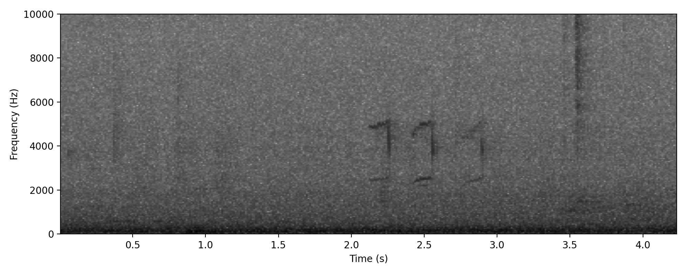
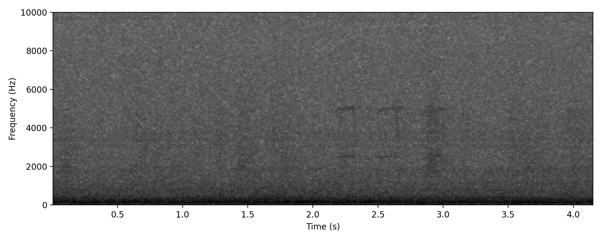
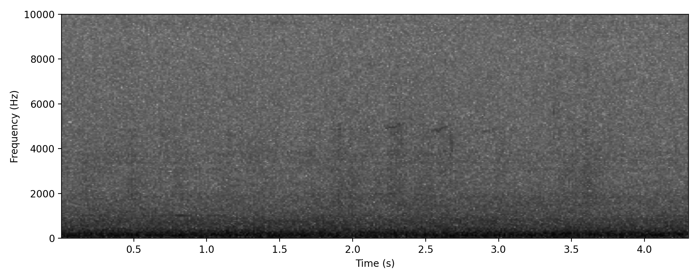

Unidentified mystery call that is frequently heard at night during migration. Clear [ shape on spectrogram.
Good example of this exasperatingly common, but as yet unidentified mystery NFC. Featured

Suggestions as to what this bird is range from Noisy Miner to Brown Quail and Magpie-lark. From Blue-faced Honeyeater to Leaden Flycatcher!
Typical example, slightly faint

Typical example, rather distorted
